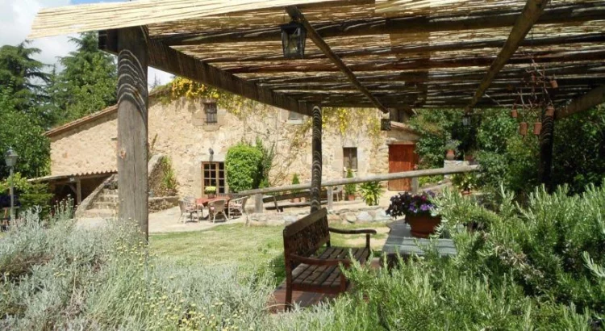
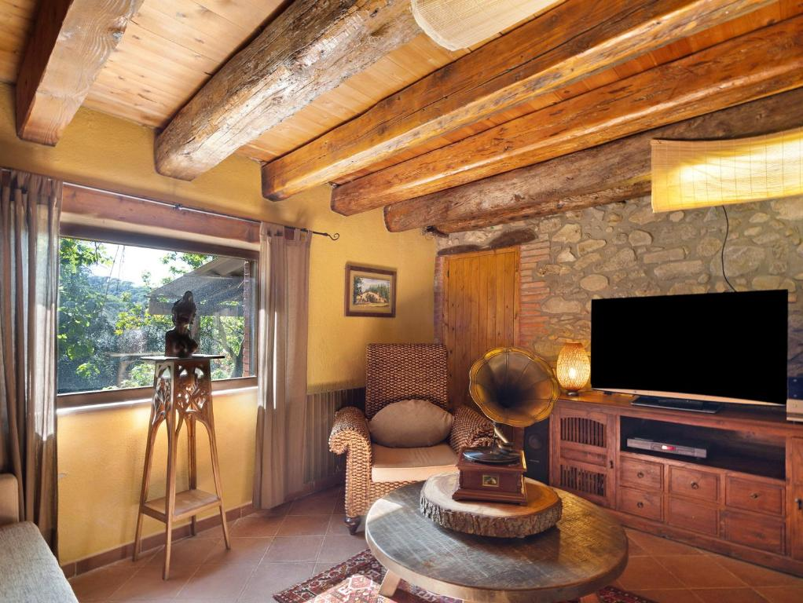

La Masía es un lugar emblemático, lleno de historia y tradición. Construida en el siglo XVIII, ha sido testigo de innumerables eventos que han marcado la cultura local. Desde sus inicios como granja hasta su transformación en un centro de reuniones sociales, La Masía ha mantenido su esencia a lo largo de los años.
Los visitantes pueden explorar sus antiguas habitaciones, disfrutar de la arquitectura tradicional y sentir la atmósfera de tiempos pasados. Hoy en día, La Masía es un símbolo de la herencia cultural, ofreciendo un vistazo a la vida rural de antaño y siendo un lugar de encuentro para los amantes de la naturaleza.